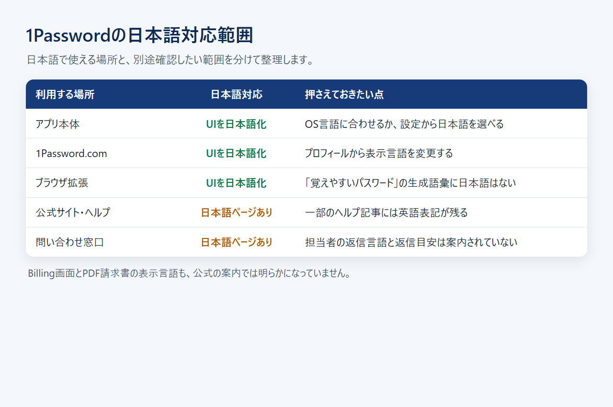
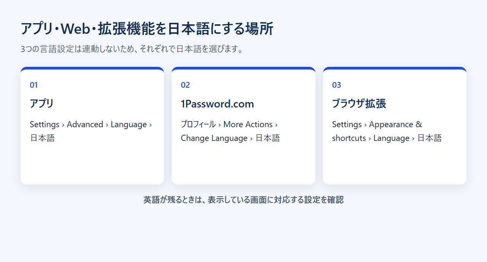
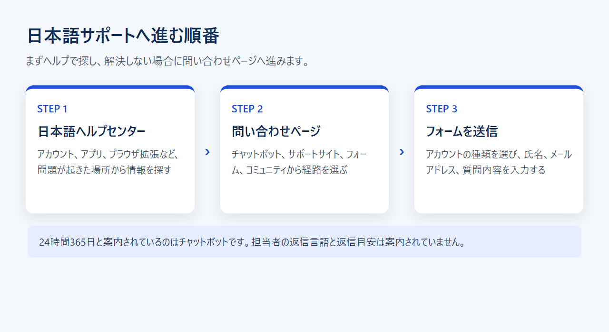

1Passwordは日本語で使える？対応範囲・設定方法・サポートを解説
1Passwordを使い始めても、アプリやブラウザ拡張が英語のままでは、設定を間違えないか不安になります。トラブルが起きたときに、日本語で問い合わせられるかどうかも気になるところです。
1Passwordは、アプリ、Web管理画面、公式サイトなどを日本語で利用できます。ただし、アプリとWebでは言語設定が別々です。日本語の問い合わせページがあっても、担当者から日本語で返信を受けられるとは限りません。表示設定と返信言語は分けて考える必要があります。
公式サイトの日本語ページでは、1Passwordの機能や対応アプリに加え、個人・家族・法人向けの現行プランを確認できます。
結論：1Passwordは日本語で使えるが、部分ごとに対応範囲が違う
1Passwordはアプリ、1Password.com、ブラウザ拡張のUIを日本語で使えます。 一方、ブラウザ拡張の「覚えやすいパスワード」は、日本語の単語を生成できません。問い合わせへの返信言語や所要日数も、公式には示されていません。
日本語で使える5つの領域
日本語対応をひとまとめにせず、実際に使う場所ごとに分けると、対応範囲を判断しやすくなります。
- アプリ本体：OSの言語に合わせるほか、設定から日本語を手動で選べる
- Web管理画面：1Password.comのプロフィールから表示言語を日本語へ変更できる
- ブラウザ拡張：設定からUIの言語を日本語へ変更できる
- 公式サイトとヘルプ：日本語ページが用意されているが、一部に英語が残る
- 問い合わせ窓口：日本語表示の問い合わせページ、チャットボット、フォームがある

パスワードを日常的に登録・確認する画面は、日本語で操作できます。請求書はPDFで取得できますが、Billing画面とPDF請求書の表示言語は公式に記載されていません。担当者からの返信も含め、すべての手続きが日本語だけで完結するとは限りません。
英語が残る場所と、公式に書かれていないこと
ブラウザ拡張のUIは日本語に変更できますが、「覚えやすいパスワード」を生成する機能は、日本語の単語に対応していません。日本語のヘルプセンターにも、英語表記が残るページがあります。
問い合わせフォームは日本語で表示されます。ただし、担当者からの返信が日本語になるか、返信まで何日かかるかは、公式ページに記載がありません。Billing画面とPDF請求書の表示言語についても、公式の案内は見当たりません。
アプリ・Web・ブラウザ拡張を日本語にする方法
アプリ、1Password.com、ブラウザ拡張の言語設定は連動しません。 英語が残っているときは、どの画面を開いているかを確かめ、それぞれの設定を変更します。
アプリはOS言語に合わせるか、設定から日本語を選ぶ
1Passwordアプリは、OSの言語に合わせて表示言語が自動で変わります。個別に変える場合は、アプリの Settings > Advanced > Language で日本語を選びます。OSによる日本語化範囲の違いは、公式には記載されていません。
1Password.comはプロフィールから表示言語を変える
ブラウザで1Password.comにサインインして、プロフィールを開きます。次に More Actions > Change Language へ進み、日本語を選択します。
Webだけが英語で表示される場合は、アプリではなく1Password.com側の表示言語を確認してください。
ブラウザ拡張は独立した言語設定を確認する
ブラウザ拡張の言語は、Settings > Appearance & shortcuts > Language から変更します。アプリやWebの設定とは別です。
言語を日本語にしても、「覚えやすいパスワード」の生成言語には日本語が追加されません。画面の表示言語と、生成に使う単語の言語は別の設定です。
日本語に変わらないときの確認順
まず、英語が残っているのがアプリ、1Password.com、ブラウザ拡張のどれかを確認します。アプリならOS言語とアプリ内設定、Webならプロフィール、拡張ならAppearanceを見直します。

公式サイトの日本語ページから、Windows、Mac、iOS、Android向けアプリと、各ブラウザ拡張の入手先を確認できます。
日本語のアイテム名・メモを保存し、検索するときの確認ポイント
1Passwordにはログイン、Secure Note、カスタムフィールド、検索、Quick Accessがあります。 日本語文字列の検索精度や表記ゆれへの対応は、公式情報では個別に保証されていません。
日本語のアイテム名とメモを整理する
1Passwordでは、Loginアイテムに名前を付け、Secure Noteへ文章を保存し、カスタムフィールドへ追加情報を登録できます。公式ヘルプが説明しているのは各入力欄と保存機能までで、日本語の文字種別ごとの挙動までは明記されていません。
検索とQuick Accessで見つける
1Password.comでは部分一致検索が使え、アプリには検索とQuick Accessがあります。ひらがなとカタカナ、全角と半角、漢字など、日本語固有の表記ゆれをどう扱うかは、公式に明記されていません。日本語検索の挙動が選定条件なら、無料トライアル中に手元のデータで確かめる必要があります。
日本語の保存と、日本語パスワード生成は別
日本語でアイテム名やメモを管理できても、日本語の単語からパスワードを生成できるわけではありません。ブラウザ拡張の「覚えやすいパスワード」が対応するのは英語、フランス語、スペイン語、ドイツ語、イタリア語、ポルトガル語、オランダ語で、日本語は含まれません。
画面を日本語表示に変更しても、生成候補が日本語の単語になるわけではありません。この違いは押さえておきましょう。
日本語のヘルプと問い合わせ窓口はどこにある？
日本語のヘルプセンターと問い合わせページは用意されています。 ただし、24時間365日と案内されているのはチャットボットです。日本語の有人対応時間を示す案内ではありません。
日本語ヘルプセンターで先に探す
設定や使い方で困ったら、まず日本語のヘルプセンターで該当する項目を探します。アカウント、アプリ、ブラウザ拡張などに分類されているため、問題が起きた場所から情報を絞り込めます。
一部の記事には英語表記が残っており、すべての記事が完全に翻訳されているわけではありません。
解決しない場合は日本語表示の問い合わせフォームへ進む
ヘルプで解決しない場合は、日本語表示の問い合わせページからフォームへ進みます。アカウントの種類を選んだ後、氏名、メールアドレス、質問内容を入力して送信します。
問い合わせページからは、チャットボット、サポートサイト、フォーム、コミュニティへ進めます。

返信言語と返信目安は公式に明記されていない
日本語で入力できるフォームがあっても、担当者からの返信が日本語になるとは限りません。返信言語と返信までの目安は、公式ページに明記されていません。そのため、「日本語で必ず返信される」「短期間で届く」とは判断できません。
有人サポートを重視するなら、英語でのやり取りが必要になる可能性も、あらかじめ想定しておく必要があります。
公式サイトの日本語ページから、問い合わせページへ進めます。フォーム自体は日本語表示ですが、担当者の返信言語と返信目安は公式には示されていません。
日本からの支払いと請求書は日本語対応とは別に確認する
日本から公式サイトで申し込めますが、標準の請求通貨はUSDです。 画面を日本語にしても、自動的に円建ての国内契約へ変わるわけではありません。
日本語ページでも請求通貨はUSD
個人向け料金ページを日本語で開いても、価格はUSDで表示されます。Individualの年払い初年度プロモは月額相当$2.99で、1ドル=157円換算（執筆時点の目安。為替で変動）では約469円です。
個人向けページではCADとEURも選べますが、JPY表示はありません。カード会社ごとの換算レートや海外事務手数料によって、実際の円請求額は目安と異なります。
日本発行のカードとJCBを使える
公式サイトではVisa、Mastercard、American Express、Discover、Diners Club、UnionPay、JCBを利用でき、日本から申し込めます。PayPalの直接払いは、公式の支払い方法一覧にありません。
日本で発行されたカードを使えても、国内事業者から円で請求されるわけではありません。経費処理に備えて、USDの利用明細とPDF請求書を保管しておくとよいでしょう。
PDF請求書は取得できるが、適格請求書の扱いは未確認
請求書はPDFでメール送付されます。1Password.comへサインインすれば、BillingのInvoicesから表示・ダウンロード・メール再送もできます。
日本の適格請求書発行事業者登録番号が記載されるかどうかは、公式に明記されていません。消費税を含む税務上の扱いは、利用状況に応じて税理士に確認してください。
日本語で使える代替を選ぶならこの4つ
代替4製品はいずれも日本語UIまたは日本語ページがあります。 無料で使える端末数、普段使うブラウザ、問い合わせ経路、保存したい情報の種類によって、適した選択肢は変わります。日本語画面、日本語ヘルプ、日本語の有人対応は、それぞれ別の条件です。
Bitwarden：日本語UIとヘルプはあるが、一部は英語のまま
Bitwardenには日本語UIと日本語ヘルプがあり、恒久無料プランでも保存件数と端末数に制限がありません。無料のまま複数端末で使いたい人に合います。ただし、一部のページは英語のままで、有人窓口の対応言語についても公式には案内されていません。
Keeper Security：日本語UIと日本向け電話番号がある
Keeper SecurityはWeb Vaultとデスクトップアプリで日本語を選べ、日本語の公式サイトには日本向け電話番号もあります。電話という問い合わせ経路を重視する人には、比較候補になります。ただし、メールとチャットの対応言語は公式に明記されていません。
Google パスワード マネージャー：Chrome・Android中心なら日本語で使いやすい
Google パスワード マネージャーには日本語画面と日本語ヘルプがあり、専用の有料契約は不要です。Chrome・Androidの標準機能内で完結させたい個人に向きます。一方、個別の有人窓口がどこまで日本語に対応するかは、公式には案内されていません。
Proton Pass：日本語サイトと日本語ヘルプがある
Proton Passには日本語UIと日本語ヘルプがあります。無料プランでもログイン、メモ、カード情報を保存でき、端末数は無制限です。無料でカード情報までまとめたい人に合いますが、個別窓口の日本語対応範囲は公式に明記されていません。
料金と始め方：日本語設定は契約後でも変えられる
1Passwordに常設の無料プランはありませんが、個人・家族・法人向けプランには14日間の無料トライアルがあります。 登録を済ませた後でも、アプリ、Web、拡張機能の表示言語は個別に変更できます。
公式サイトからアカウントを作る
1人で使うならIndividual、最大5人の家族で共有するならFamiliesが候補です。共有や管理者権限が必要な組織では、10人分を含み最大20人までのTeams Starter Packか、ユーザー単位で契約するBusinessを検討します。仕事で使うかどうかだけで決めず、共有・管理機能の要否で選び分けます。
アプリとブラウザ拡張を入れて日本語を確認する
アカウントを作成したら、利用する端末へアプリを入れ、普段使うブラウザに拡張機能を追加します。その後、アプリ、1Password.com、ブラウザ拡張を順に開き、それぞれの言語設定が日本語になっているか確認します。
普段使う端末とブラウザから設定を始めると、どこに英語が残るかを切り分けやすくなります。
無料トライアル中に使い続けるか判断する
トライアル中は、ログイン情報の登録と自動入力だけでなく、利用予定の端末すべてで日本語表示を確認します。サポートを重視する場合は、ヘルプで必要な情報へ迷わずたどり着けるかも確認しておきます。
継続しない場合はトライアル中に解約すれば課金されません。公式サイトから契約した場合は、1Password.comのBillingからキャンセルできます。
公式料金ページの日本語版では、無料トライアルの対象や現行プラン、各プランに含まれる機能を確認できます。
1Passwordの日本語対応でよくある質問
日本語表示の設定場所は利用環境ごとに異なります。 問い合わせページが日本語で表示されても、担当者からの返信まで日本語になるとは限りません。
アプリを日本語にしてもWebが英語のままなのはなぜ？
アプリと1Password.comの言語設定が連動しないためです。Web側はプロフィールの More Actions > Change Language から日本語を選びます。
日本語で問い合わせれば日本語で返信される？
日本語の問い合わせフォームはありますが、返信言語は公式に明記されていません。日本語で送信できることと、日本語で返信を受けられることは、分けて考えてください。
ブラウザ拡張も日本語にできる？
ブラウザ拡張は Settings > Appearance & shortcuts > Language から日本語を選べます。ただし、「覚えやすいパスワード」の生成言語に日本語は含まれません。
日本語ページから申し込めば円で請求される？
いいえ。日本語の料金ページでも既定通貨はUSDで、JPY表示ではありません。日本発行のJCBを含む対応カードで申し込めます。
まとめ：表示設定とサポート窓口を分けて確認しよう
1Passwordはアプリ、1Password.com、ブラウザ拡張のUIを日本語で使えますが、それぞれ設定場所が分かれています。 ブラウザ拡張の「覚えやすいパスワード」は日本語の単語を生成できません。また、日本語の問い合わせページがあっても、返信言語までは保証されていません。
- 1Passwordを導入する：トライアル中に、普段使うアプリ、Web、ブラウザ拡張の表示を確認する
- 代替を選ぶ：Bitwardenの無料枠、Googleの標準機能、Keeperの電話窓口、Proton Passの無料プランで扱える情報を比べる
4製品とも、日本語での有人返信は公式に保証されていません。
公式サイトの日本語ページでは、現行プラン、対応アプリ、ブラウザ拡張の入手先をまとめて確認できます。